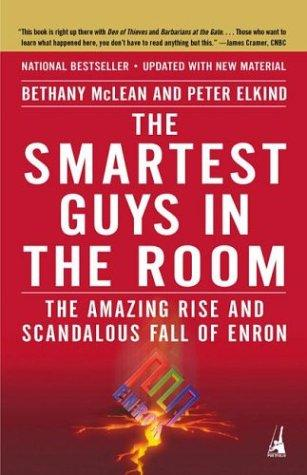

贝瑟妮·麦克莱恩（Bethany McLean）与彼得·埃尔金德（Peter Elkind）在写就此书时均任职于《财富》杂志（Fortune）高级撰稿人。麦克莱恩在2001年3月发表了题为《安然的股价是否虚高？》（"Is Enron Overpriced?"）的文章，成为全美第一篇公开质疑安然财务状况的主流媒体报道，那时距安然（Enron）申请破产保护还有八个月。《房间里最精明的人》（The Smartest Guys in the Room）于2003年首次出版，是两位作者在安然轰然倒塌后进行系统调查的成果，至今仍是理解这一历史上最大公司丑闻的权威文本。2005年，本书被改编成同名纪录片。
安然曾是美国能源业的骄子，肯·莱（Ken Lay）与杰夫·斯基林（Jeff Skilling）将其从一家天然气管道公司转型为多元化能源交易帝国，鼎盛时期年营收高达一千亿美元，连续多年被《财富》杂志评为"全美最具创新力企业"。麦克莱恩与埃尔金德深入还原了这场骗局的内在逻辑：安然的增长神话很大程度上依赖按市值计价（mark-to-market）会计准则的滥用——公司可以在合同签订之初便将未来的预期利润全部确认为当期收入，同时通过安迪·法斯托（Andy Fastow）设计的迷宫般的表外实体（special purpose entities）将债务和亏损隐藏在公众视野之外。这套机制在扩张期自我强化，一旦现金流出现缺口便迅速崩溃。书中的人物刻画同样入木三分，揭示了斯基林的傲慢与恐惧如何共同构成了安然企业文化的底色。
本书出版后受到广泛推崇。沃伦·巴菲特（Warren Buffett）评价其"采访扎实、文笔流畅"；《商业周刊》（BusinessWeek）称之为"迄今关于安然崩溃最出色的一部作品"；《今日美国》（USA Today）则形容两位作者的文笔"如同一名短跑运动员轻盈地飞奔在跑道上"。中文版以《房间里最精明的人》为题出版，译名保留了书名的反讽意味。
安然破产距今已超过二十年，这本书却从未过时。它揭示的不只是一家公司的犯罪，更是整个生态系统——分析师、审计师、银行、董事会——如何在利益驱动下集体性地选择不去看清真相。对于投资者而言，安然的教训可以简化为一个问题：当一家公司的盈利模式无法用简单语言解释清楚时，这本身就是一个信号。